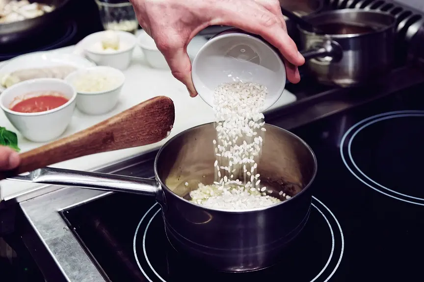
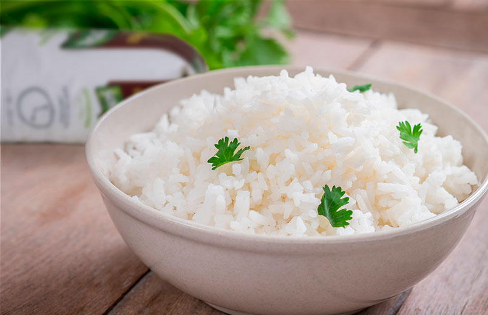

Arroz blanco
Ingredientes:
- Arroz
- 2 cucharadas de aceite por cada taza de arroz
- 1 taza de arroz blanco de grano redondo
- 2 tazas y media de agua
- 5 gramos de sal
Paso a paso:
- Añadimos dos cucharadas de aceite por cada taza de arroz que vayáis a utilizar. El aceite es el ingrediente que ayudará a que no se pegue el arroz.
- Calentamos la cazuela y echamos el aceite, en cuanto veamos que está caliente añadimos el arroz y removemos durante un minuto aproximadamente a temperatura media para tostar el arroz.
- Vertemos 2 tazas de agua y media por cada taza de arroz, dejamos a fuego fuerte durante 4 minutos hasta que pille mucha temperatura y empiece a hacer borbotones. Añadimos sal y luego bajamos a fuego medio unos 12 minutos con la tapa de la cazuela puesta.
- Cuando veamos que ya casi no hay agua y empiezan a quedar pequeños agujeros entre los granos de arroz, bajamos la temperatura al mínimo tres minutos o simplemente apagamos el fuego.
- Dejamos que repose con la tapa puesta o con un trapo de algodón durante unos 5 minutos. Mientras reposa, el arroz absorberá el resto de agua y te debería quedar en su punto y los granos separados. Podemos ir probando el arroz en el reposo para ver como está quedando.

